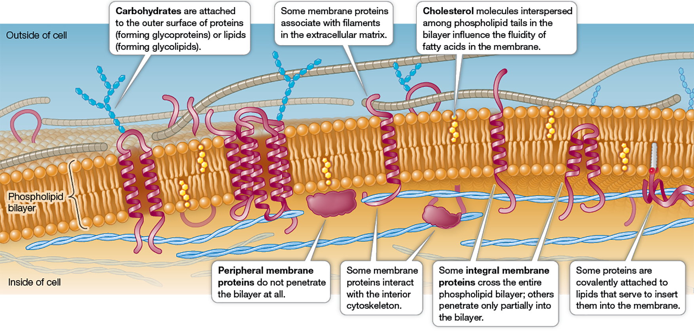
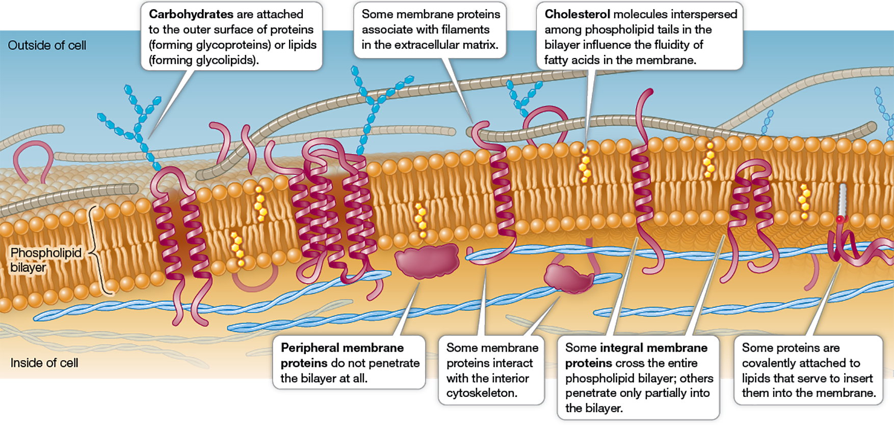

Figure 6.1 The Fluid Mosaic Model
The general molecular structure of a biological membrane is a continuous phospholipid bilayer that has proteins embedded in it or associated with it.

The general molecular structure of a biological membrane is a continuous phospholipid bilayer that has proteins embedded in it or associated with it.